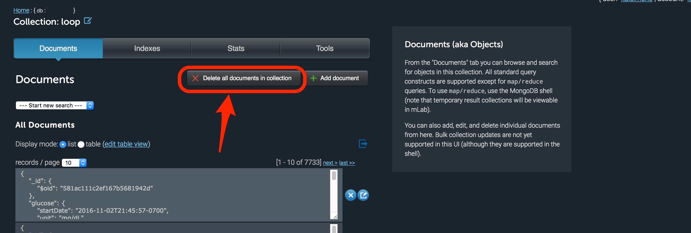

Nightscout Issues⌁
The free Nightscout we use also depends on a free database from mLab. The free database only has so much room...500 MB to be specific. After a period of time (it will vary, but usually on the order of months), your mLab database could reach its free limits. When that happens, your NS site may stop showing data properly. For example, you may notice your Share Bridge will not pull data and your site will be “stale”.
The good news? Loop can still run just fine until you cleanout and/or compact your mLab database. The bad news? You just won’t be able to remotely monitor Loop through NS until you clear up some storage space in mLab.
Note there are two areas where the 500 MB data limit can be an issue. One is called the size which is the actual data stored in your database. The other is called size on disk which is the virtual space that your database takes up. As data is written onto your free database, sometimes it is written inefficiently and virtually "spreads out" to take up more room. Depending on where your issue is, you may need to delete or cleanout data (if size is the issue) or you may just need to compact data (if size on disk is the issue). To see the two areas, as shown on the screenshot below, click on the small Home link button as shown.

Cleanout mLab⌁
If size is the issue, there are two ways to cleanout space and delete data in your mLab database:
- mLab direct access
- Nightscout admin tools
mLab Direct Access⌁
-
Login to your mLab database.
-
If you setup your own Azure site and mLab database, go directly to mLab and login, or
-
If you setup your own Azure site and mLab database, then setup a Heroku account and pointed back to your old mLab database (i.e., copy and pasted the MONGODB_URI from Azure), go directly to mLab and login, or
-
If you setup a Heroku site and let Heroku setup an mLab database for you (which is typical for new Heroku sites), you will access mLab through your Heroku account main page. Login to your Heroku account and click on the mLab logo as shown below.
-

-
(Users coming directly from a Heroku click will see the screen below. If you had to login to mLab with a name and password, you will first see a line with your MongoDB database. Click on your database name to see the screen below with all the collection names.)
Your various collections are shown, similar to the screen shot below. The amount of data each collection is using is listed to the far right of each collection’s line. I recommend emptying the “loop” collection first (if you have one, some people won't) and then "devicestatus" to free up database storage. If you need any of the information in the database, you may want to do a selective delete of data. For example, if you are headed into an endocrinologist appointment and want to print out recent Nightscout reports to take with you. Eventually you may need to empty more collections. It should be awhile though, as the other collections are significantly smaller and will take a long time to fill.
Click on a collection’s name to open it.

- Click on the button that says “Delete all documents in collection” and then confirm the deletion.

- You can confirm that your cleanout has resolved the problem, by checking that your database size is below 500 MB now. Click on the
Homelink in top left. Then review the size of the database as shown.

Nightscout Admin Tools⌁
If you go to your Nightscout site's settings (the three horizontal bars in the upper right of your Nightscout site), you will be able to access your Admin Tools for the site. These include some useful quick mLab actions, includig deleting documents from the devicestatus collection similar to the action we took in the steps above. But, it's worth noting that if you have errant future data in your Nightscout site that is causing problems (usually during time changes or overseas travel), you can clean-out future entries through this portal, too.

Compact mLab⌁
You may get an email from mLab, even after cleaning out enough space in your database, alerting you that your "file size limit" may have been exceeded. However, these emails aren't always sent and sometimes you'll need to compact your mLab even without being notified.

To begin the compaction process, click on your database name.

Then click on the Tools tab in the screen that opens. Click on the commands button and then select the repairDatabase from the dropdown menu of available commands. At the bottom of the screen, select the Run Command button.

Unfortunately, the repairDatabase command really is glitchy. Most of the time, the command will simply stall out and not actually produce a successful ok return message. If you are having problems with the command actually running, try deleting the documents in the devicestatus collection, as described in the section above. After cleaning out the devicestatus collection, the repairDatabase command should work just fine.
Return to your home screen and you will be able to verify the Size on Disk has decreased.